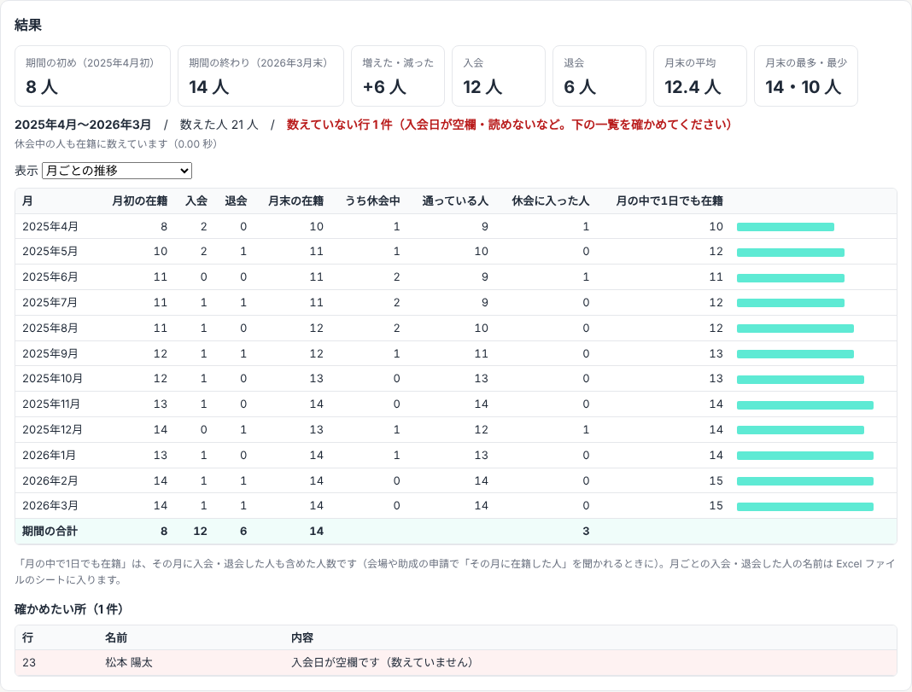

在籍人数の月ごとの推移
教室・スクール・スポーツクラブ・少年団などの名簿（入会日・退会日、あれば休会の期間とコース）から、月ごとの在籍人数・入会・退会・休会中の推移表を作ります。
- 月ごとの推移表：月初の在籍、入会、退会、月末の在籍、うち休会中、通っている人、その月に1日でも在籍した人。「月初＋入会−退会＝月末」で合います
- コースごと：コース・クラスごとの月末の人数と、期間の入会・退会の数
- 1人ごと：通算の在籍月数（「3年2か月」）、期間の中の在籍月数、期間の終わりの状態（在籍・休会中・退会）。在籍月数の長い順にも並べられます
- 休会：「休会開始・休会終了」の2列か、「2025/6〜2025/8」と書いた1つの列。休会中の人を在籍に数えるか、数えないかを選べます
- 印刷と保存：推移表（A4 縦、棒グラフつき）・コースごと・1人ごとを印刷。Excel ファイル（月ごと・コースごと・1人ごと・月ごとの入会と退会の名前・確かめたい所）、CSV
年度の振り返り、総会・保護者会の資料、会場の利用申請や助成金の報告で「月ごとの会員数」を聞かれたときに。ソフトのインストールは不要で、いつものブラウザで動きます。
お試し版はすべての機能を使えて、数えるのは名簿の先頭15人までです。決済が終わると、そのまま製品版の画面に移動します。ブックマークしておけば何度でも使えます。

見本のデータ（架空の名前）で作った例です。
こんなときに
- 年度末に「毎月何人いたか」を、名簿の入会日・退会日を見ながら1か月ずつ数え直している
- 会場の利用登録や助成の報告で、月ごとの会員数を書く欄がある
- 休会中の人を数えるか数えないかで、人数が合わなくなる
- どのコースが増えて、どのコースが減ったかを1枚の表で見たい
- 発表会や表彰のために、長く続けている人の在籍の長さを知りたい
できること
- 読める表：1行に1人の名簿（名前・入会日、あれば退会日・コース・休会）。列は見出し（「入会日」「入塾日」「退会日」「休会開始」など）から選び、選び直せます
- 日付の書き方：「2025/4/1」「2025年4月1日」「2025-04-01」「R7.4.1」「令和7年4月1日」、Excel の日付。月だけ（「2025/4」「2025年4月」）も読めて、入会は1日、退会は月末として数えます
- 期間：始めの月から6・12・24・36・60か月。「今年度（4月〜3月）」「前年度」「今年」のボタン
- 数え方：退会日はその日まで在籍。月末に退会する人は、その月の「退会」に入れ、月末の在籍には入れません。月初は前の月の月末と同じ数です
- 確かめたい所：入会日が空欄・読めない行（数えません）、退会日が入会日より前、読めない休会の期間、在籍の期間の外の休会、同じ名前で在籍の期間が重なる行（同じ人を2回数えているかも）。期間が重ならない同じ名前は「再入会」として扱います
- CSV（UTF-8・Shift_JIS）と Excel ファイル（.xlsx）を読めます。Excel の表をコピーして貼り付けても使えます
できないこと（購入前にご確認ください）
- 退会の理由の分析や、これからの人数の予測はしません。名簿から数えた結果だけを出します
- 月謝・会費の金額は扱いません（月謝の請求額の一覧、会費・月謝の納入状況の一覧 があります）
- 入会日がない人は数えられません。入会日が分からない人は、分かる範囲の日付（「2020/4」など）を入れてください
- 出席の回数は数えません（出欠表の出席率の集計 があります）
- スマートフォンでは操作しにくいため、パソコンでお使いください
Excel だけで数えるなら
B 列に入会日、C 列に退会日（在籍中は空欄）が2〜200行目まであり、E2 に数えたい月の末日（2025/4/30 など）を入れたとき、
月末の在籍：=COUNTIFS($B$2:$B$200,"<="&E2,$C$2:$C$200,">"&E2)+COUNTIFS($B$2:$B$200,"<="&E2,$C$2:$C$200,"")
その月の入会：=COUNTIFS($B$2:$B$200,">="&EOMONTH(E2,-1)+1,$B$2:$B$200,"<="&E2)（退会は B を C に変えます）
で出せます。E 列に各月の末日を並べて下にコピーすれば、推移表になります（表計算ソフトで、6人の見本の4月・5月の月末の在籍3人・入会1人・退会1人を確かめました）。
注意：入会日・退会日が文字（「2025年4月」「R7.4.1」など）で入っていると数えられません。休会中の人を分ける、コースごとに分ける、1人ごとの在籍月数を出す、同じ人の2重の行を見つける、には式を足していく必要があります。
このツールが向いているのは、日付の書き方がそろっていない、休会がある、コースごとの表も欲しい、何年分もまとめて出したい、といったときです。
よくある質問
| データはどこかに送られますか？ | 送られません。読み込み・計算・印刷・保存はすべてお使いのブラウザの中で行います。数え方の設定と団体の名前だけをブラウザに保存し、名簿の名前・日付は保存しません。 |
|---|---|
| 月末に退会した人は、その月の在籍に入りますか？ | 月末の在籍には入れず、その月の「退会」に入れます。「月の中で1日でも在籍」の列には入ります。こうすると「月初＋入会−退会＝月末」で合います。 |
| 一度やめて、また入会した人は？ | 名簿に2行あれば、それぞれの期間で数えます。同じ名前で期間が重ならなければ「再入会」とメモし、重なれば確かめたい所に出します。 |
| 何人まで使えますか？ | 製品版は人数の制限はありません（5,000人・24か月分を、手元のパソコンで約0.05秒で数えられることを確かめています）。 |
安心してお使いいただくために
- 名簿はお使いのブラウザの中だけで処理し、サーバーには送信しません
- 動作環境：最新版の Chrome・Safari・Edge・Firefox（パソコン）
- 説明どおりに動かない場合は、ご購入から7日以内にご連絡いただければ返金します
名簿の同じ人の重なりには 名簿の重複チェック、毎月の回数には 月ごとのレッスン日と回数 もあります。